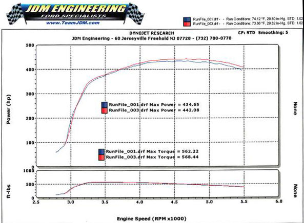
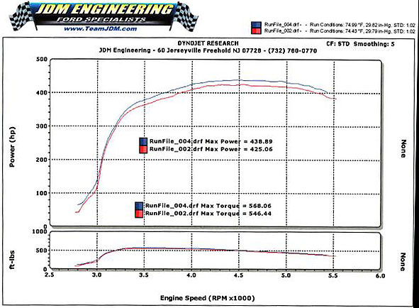

|
JDM Phenolic Spacer |
|
JDM has released a phenolic spacer kit to isolate the intake tract from the supercharger, which apparently both isolates the intake from heat and straightens out the airflow just before it enters the top of the supercharger. The price is $90 without the EGR tube or $139 with a new EGR tube (the tube has to be rebent to reach the new higher mounting point, which some have reported is a real job). Bottom line: the product works as advertised. Here is a before-and-after dyno test done by Fast Gator on a cold engine (7 rwHP gain):  Here is a the same test on a hot engine (14 rwHP gain):  Not bad for $130! |